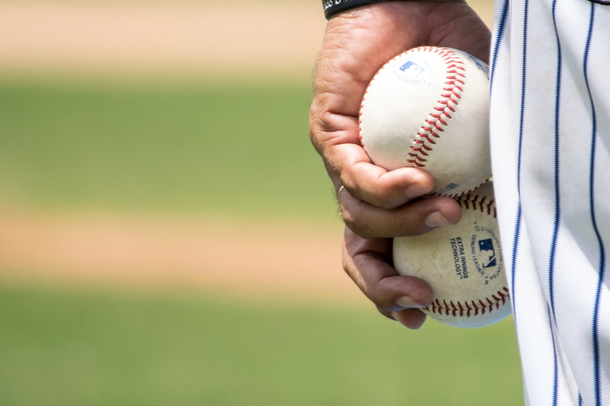

야구(野球)라는 명칭은 일본에서 만든 한자어이고, 한국에서 사용하는 '야구'라는 명칭도 일본에서 만들어진 명칭의 한자독음을 그대로 따와서 사용하는 것이다. 다만 야구 도입 초기에는 타구(打球), 격구(擊毬) 등 번역어가 만들어져 잠깐 사용한 적이 있었다.일본에 베이스볼이 전파된 시기는 1872년이며,를 놓고 하는 농구도 있다.일명 길거리 농구 혹은 Street Ball.
야구(野球)는 9명씩[4]으로 이루어진 두 팀이 9회씩 공격과 수비를 번갈아 하며 승패를 겨루는 구기 경기이다.[5] 공격하는 쪽은 상대편 투수가 던진 공을 방망이(bat)로 치고 1, 2, 3루를 돌아 홈으로 돌아오면 1점을 얻는다. 점수를 많이 얻는 팀이 이긴다.